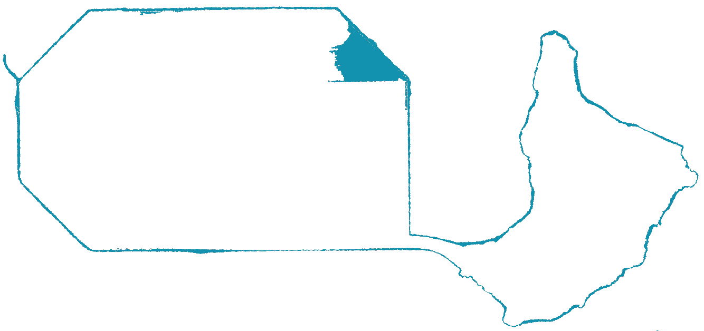
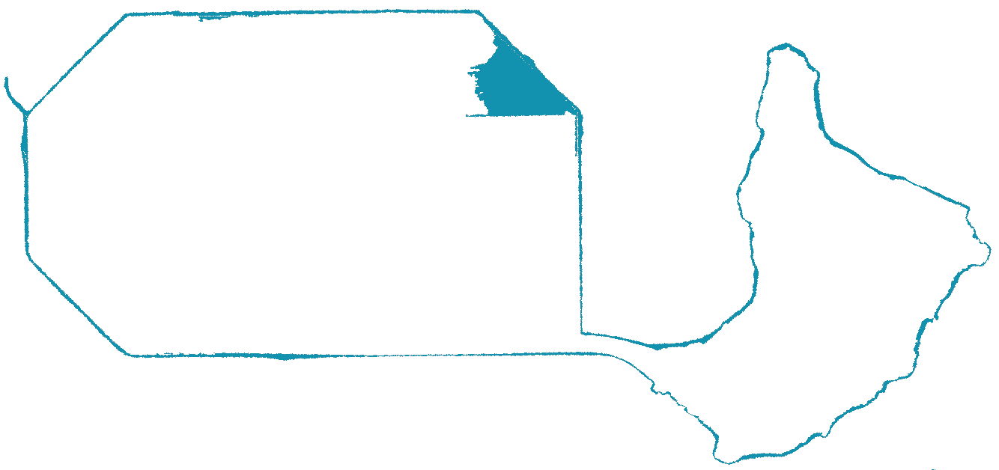

Urban Planning
For the Deep
How the Design for the New Treasure
Island Reckons with Sea Level Rise
In 1936-37 Treasure Island (TI) was fabricated at sea level as part of the Works Progress Administration, a federal program to provide jobs and create infrastructure to help bring the U.S. out of the Great Depression.

TI was built in the 1930s long before sea level rise (SLR) began to accelerate. Still it seemed vulnerable to the waves. Mitigations for SLR are built into all aspects of its redevelopment.

On clear days the GGIE's Tower of the Sun was visible from the mainland. The TI redevelopment includes a tall mixed-used tower near the same site.
The island’s first event was the Golden Gate International Exhibition (GGIE), a world’s fair, 1939-1940. After the fair closed with World War II looming, the U.S. Navy transformed the island into a base, which occupied the island until the end of the 20th century.

Gothic-esque, the Tower of the Sun epitomized the remix of architectural styles that characterized the GGIE.

The Elephant Tower, despite its name, was inspired by the Aztec and Mayan architecture of Mexico and the Northern Triangle.
TI’s 400 acres will be 100% transformed in the next 15 years by its redevelopment. The comprehensive redesign addresses many environmental problems, including excess water.

The new TI and YBI will provide 290 acres of publicly accessible land, including 22 miles of walking, hking and biking paths.
Flooding has always been part of TI’s landscape, even before sea level rise (SLR) began to accelerate. From its inception TI has experienced wave overtopping, meaning that during storm surges and at the highest tides, waves break over its vintage, human-crafted edges and cause saltwater floods.
The island also floods with rainwater. Ever since the navy paved TI, it has been pockmarked with ponding fresh water from storms that can make walking and driving difficult. The rainwater also sometimes overflows into underground basements and first floors. The development plan mitigates for both ponding rainwater and SLR to create a new more habitable place.

This San Francisco Planning Department map shows an upper-range SLR projection of 108 inches at the end of the century. It models 66” inches of SLR plus 42” of tidal and storm surges. The Treasure Island Development Authority (TIDA) also projects up to 66 inches of SLR by 2100 in planning adaptive design features for the new development.

Waves from a king tide overtop San Francisco's Pier 14. Yerba Buena Island in the distance.

Without the geotechnical reengineering of TI, it would continue to sink at a very high rate of 1/3 inch a year, as the height of the Bay keeps increasing. (Wired Magazine 03 07 21)
Treasure island &
Sea Level Rise
The developers broke ground on the redevelopment of Treasure Island in 2016, beginning with large geotechnical improvements. Included in this first work phase are cutting edge techniques to densify the soil and dewater the mud-fill used to construct the island in the 1930s. The perimeter of the island is also being shored up. The new Treasure Island is expected to be complete, including all buildings, infrastructure, parks and open spaces, in 2035. Adaptation to sea-level rise (SLR) is an integral part of the plans, as the old island was extremely vulnerable to the rising Bay.
Use the slider in the dynamic flood maps below to show probable flooding on Treasure Island during powerful storms in 2022, 2035, and 2050. The map on the left shows sea water inundation if the proposed adaptation measures are completed, while the map on the right shows what flooding would look like if the redevelopment were not to happen. The landscape at the north and east of the island will become open space and wetlands, an essential part of SLR mitigation as it can absorb flooding that in turn will nourish the ecosystem.
With redevelopment
 

Without redevelopment


4 in
7 in
11 in
2022
2035
2050
The first round of Treasure Island’s redevelopment is designed to protect the island against severe flooding between now and 2050. Nevertheless, it is possible there will be significant flooding in the event of a storm more powerful than those that cause 100-year floods.
Such extreme flood events have occurred regularly in the US over the past decade--consider Hurricanes Harvey and Sandy--and could also occur at Treasure Island. Under such scenarios, new open space, wetlands and a 30 ft. buffer between buildings and the island’s perimeter will mitigate the effect of waves that breach the shoreline. Elevated construction pads will keep flood waters out of buildings and other critical infrastructure. This image shows how these elevated pads will protect buildings and people if such a flood occurs in the next 30 years.

The flood simulations in this Treasure Island & SLR tool show possible effects of a 100-year flood. The exact rate of sea level increase over the next 30 years is unknown. It will be determined by how quickly glaciers melt and oceans warm. We show two different possibilities here. The medium projection includes 11” of sea-level rise from 2000 to 2050, while the high model anticipates 24” of SLR in the same period. While the island’s current adaptation measures are designed to handle 16” of SLR, additional measures are planned should it approach that height. These additional adaptations should protect the island from flooding through 2100.
A 100-year flood is a hypothetical scenario that scientists and engineers commonly use to assess flood risk. Based on past data, the metric represents a flood that should occur on an average of once every hundred years, when storms, tides, and tsunamis are taken into account. Exactly when such an event occurs is random, so such a flood may occur more than once in the next century if Treasure Island is unlucky. When a 100-year flood occurs, it will be destructive unless appropriate adaptation measures are taken, such as those proposed in the redevelopment plan.
Shoreline communities, especially those situated on legacy low-lying land such as TI, are extremely susceptible to damage from sea level rise (SLR) caused by climate change. The severity of storms is increasing along with the volume of the oceans.

These barracks converted to housing will be razed. 27% of new homes built will be affordable and current low-income residents are being offered inclusive housing on island.
These conditions affect coastal areas all over the world. In the U.S. alone in the next 80 years -- within the lifespan of a baby born today -- a conservative estimate is that the lives of 13 million people will be altered by SLR. Many homes and properties will flood or fall into the sea and people will be forced to move inland.

This map from Bloomberg illustrates the probability that by 2100 as many as 13 million people in U.S. coastal communities will be forced out of their homes and businesses due to sea level rise. The TI redevelopment plan is based on design which adapts to projected increases in the height of the Bay by century's end.
Underserved communities are the most vulnerable to sea level rise.
When Category 3 Hurricane Katrina roared into New Orleans in 2005, close to 1800 people died, almost all of them low income.
Despite a mandatory evacuation order, at least a tenth of the city’s population remained, especially in the lowest lying and poorest areas of the city. Some stayed in their homes for emotional reasons, but many remained because they lacked communications technologies, financial resources or transportation.

Hurricane Katrina's waters receded weeks after it hit NOLA, to reveal more, different markers of catastrophe.

Rescue efforts the day after Katrina.
On TI the entire current population is low to middle income. They number 1800, coincidentally the same number as those who lost their lives to Hurricane Katrina. However, before the storm there was never a redevelopment plan for the 9th Ward in New Orleans.
There is for TI and it’s already in progress. It’s an SLR-conscious redesign and engineering of all 400 acres, with an inclusionary housing plan for current residents. A new multimodal transportation hub will be one of the first things to be completed.

The current population of TI is approximately 50% low income. The non-profit One Treasure Island (OneTI) serves as an umbrella for social sevices, including food banks, such as the one pictured here.

Another service overseen by OneTI is the Construction Training Program. Members of this 2020 graduating cohort, all TI residents, found work on island with the developers.

Standing water behind barracks converted to housing on the north end of the old TI

Proposed housing models for the new TI
Without this island redo over the next fifteen years, if a major storm were to hit TI, there’s little doubt that many members of the current community would die or suffer as did those in New Orleans during Katrina.

A small number of the NOLA homes lost to Katrina on August 29 2005